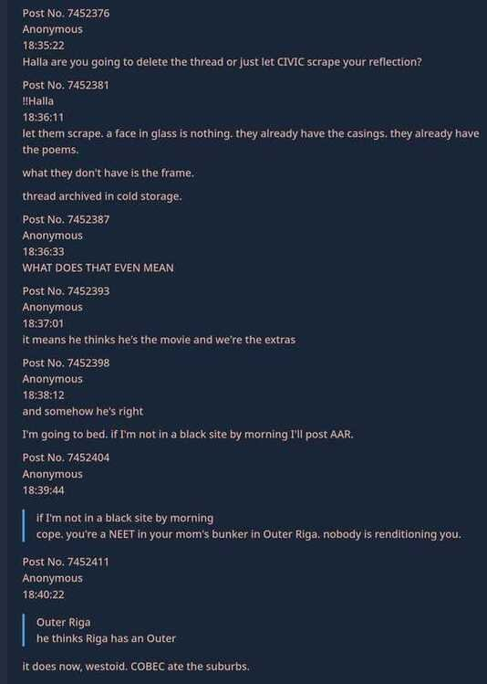
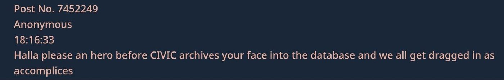

World-building guide: Greebling
At some point recently, I was discussing this world-building technique I do and it made me realise you guys may find it interesting.
The thread in the screenshots is the kind of thing it produces: a full in-universe alt-timeline version of 4chan thread the model generated off almost no lore. Most importantly though, the NPCs in the thread are diegetically discussing the world in organic way, without reciting Lorebook entries and breaking immersion.
Context for my universe first, since the setting won't mean anything to you yet:
Alt-2020s. The EU expansion collapsed around 2004, so Schengen never formed and the Iron Curtain rusted through instead of lifting. The west is a slow, cold surveillance state; the east is collapsed buffer zones running on Cold War surplus and barter. Freelance operators work the rotted border between them.
That's most of the actual history I wrote down. The rest of the setting is carried by names I never define — CIVIC, the Vienna Exclusion Protocols, Outer Riga, COBEC. No lorebook entries for any of them specifically. They get dropped in the general world lore (in relevant context) that mostly discusses character dynamics, and because each name is semantically loaded, the model unpacks it from its own associations and uses it correctly. CIVIC lands as a citizen-registry surveillance system without anyone saying so. Outer Riga implies a city that got administratively gutted.
I thought it'll need a name if I'm to post this guide, so I decided on calling it greebling, after the surface bits Star Wars modelmakers would glue onto a spaceship to imply machinery that was never designed. Same idea: a name that suggests a whole institution standing behind it, with nothing actually there.
It works better than a lorebook entry for a mechanical reason. The model can't recite a definition it doesn't have, so it works the term into the scene instead. That keeps it diegetic, costs almost nothing in tokens, and the constraints are tight enough that what it invents stays consistent.
The thread shows it better than I can:


A few things in there I didn't write:
- CIVIC used as the live threat exactly how I'd have written it: "before CIVIC archives your face into the database and we all get dragged in as accomplices."
- "he thinks Riga has an Outer / it does now, westoid, COBEC ate the suburbs" — consistent geography, an in-world slur, and COBEC treated as established fact, all off the naming convention.
- The character surfacing sideways through how the board talks about him ("he thinks he's the movie and we're the extras"), then posting in his own voice under his tripcode: "they already have the casings, the poems. what they don't have is the frame."
The catch, if you want to try it: the name has to carry real load. Outer Riga works because every word in it points somewhere. A name with no semantic handle (e.g. the Zorvan Accords) gives the model nothing to unpack, and it'll stall or improvise something off-tone. The skill is picking names that are evocative and associative and sit right in the register, then leaving them alone.
It's the John Wick 1 approach, more or less — everything named, nothing explained, the world reading as much larger than what's on screen. Models turn out to be good at holding up their end of that.